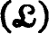
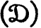

A. D. ALEXANDROFF
[1]On the extension of a Hausdorff space to an H-closed space, C. R. (Doklady) Acad. Sci. U.R.S.S., N.S. 37 (1942) 118–121
P. ALEXANDROFF
[1]Sur les ensembles de la première classe et les ensembles abstraits, C. R. Acad. Sci. Paris 178 (1924) 185–187
P. ALEXANDROFF and H. HOPF
[1]Topologie I, Berlin (1935)
P. ALEXANDROFF and P. URYSOHN
[1]Mémoire sur les espaces topologiques compactes, Verh. Akad. Wetensch. Amsterdam 14 (1929) 1–96
[2]Une condition necessaire et suffisante pour qu’une class  soit une class , C. R. Acad. Sci. Paris 177 (1923) 1274–1277
A. APPERT
[1]Écart partielement ordonné et uniformité, C. R. Acad. Sci. Paris 224 (1947) 442–444
A. APPERT and KY FAN
[1]Espaces topologiques intermédiares. Problème de la distanciation Actualités Sci. Ind. 1121 Paris (1951)
R. ARENS
[1]Note on convergence in topology, Math. Mag. 23 (1950) 229–234
[2]A topology for spaces of transformations, Ann. of Math. (2) 47 (1946) 480–495
[3]Topologies for homeomorphism groups, Amer. J. Math, 68 (1946) 593–610
R. ARENS and J. DUGUNDJI
[1]Remark on the concept of compactness, Portugaliae Math. 9 (1950) 141–143
[2]Topologies for function spaces, Pacific J. Math. 1 (1951) 5–31
[1]Quelques remarques sur les relations entre les notions d’écart régulier et de distance, Bull. Amer. Math. Soc. 44 (1938) 653–657
[2]Über ein Urbildproblem, Fund. Math. 17 (1931) 92-121
M. BALANZAT
[1]On the metrization of quasi-metric spaces. Gaz. Mat., Lisboa 12, no. 50 (1951) 91-94
S. BANACH
[1]Théorie des opérations linéaires, Warsaw (1932)
E. G. BEGLE
[1]A note on S-spaces, Bull. Amer. Math. Soc. 55 (1949) 577–579
R. H. BING
[1]Metrization of topological spaces, Canadian J. Math. 3 (1951) 175–186
G. BIRKHOFF
[1]Lattice Theory (Revised Ed.), A.M.S. Colloquium Publ. XXV, New York (1948)
[2]A note on topological groups, Compositio Math. 3 (1936) 427–430
[3]Moore-Smith convergence in general topology, Ann. of Math. (2) 38 (1937) 39–56
N. BOURBAKI
[1]Topologie générale, Actualités Sci. Ind. 858 (1940), 916 (1942), 1029 (1947), 1045 (1948), 1084 (1949), Paris
[2]Intégration, Actualités Sci. Ind. 1175, Paris (1952)
[3]Espace vectoriels topologiqúe, Actualités Sci. Ind. 1189 Paris (1953)
N. BOURBAKI and J. DIEUDONNÈ
[1]Note de tératopologie II, Revue Scientifique 77 (1939) 180–181
E. ČECH
[1]On bicompact spaces, Ann. of Math. (2) 38 (1937) 823–844
C. CHEVALLEY
[1]Theory of Lie Groups I, Princeton (1946)
E. W. CHITTENDEN
[1]On the metrization problem and related problems in the theory of abstract sets, Bull. Amer. Math. Soc. 33 (1927) 13–34
H. J. COHEN
[1]Sur un problème de M. Dieudonné, C. R. Acad. Sci. Paris 234 (1952) 290-292
L. W. COHEN
[1]On topological completeness, Bull. Amer. Math. Soc. 46 (1940) 706–710
[1]On the metrization of uniform space, Proc. Amer. Math. Soc. 1 (1950) 750-753
J. COLMEZ
[1]Espaces à écart généralisé régulier, C. R. Acad. Sci. Paris 224 (1947) 372–373
M. M. DAY
[1]Convergence, closure and neighborhoods, Duke Math. J. 11 (1944) 181–199
J. DIEUDONNÉ
[1]Une generalization des espaces compacts, J. Math. Pures Appl. 23 (1944) 65–76
[2]Sur un espace localement compact non metrisable, Anais da Acad. Bras. Ci. 19 (1947) 67–69
[3]Sur la completion des groupes topologiques, C. R. Acad. Sci. Paris 218 (1944) 774–776
[4]On topological groups of homeomorphisms, Amer. J. Math. 70 (1948)659–680
[5]Un exemple d’espace normal non susceptible d’une structure uniforme d’espace complet, C. R. Acad. Sci. Paris 209 (1939) 145–147
[6]Sur les espaces uniformes complets, Ann. Sci. École Norm. Sup. 56 (1939) 227–291
J. DIXMIER
[1]Sur certains espaces considérés par M. H. Stone, Summa Brasil. Math. 2 (1951) 151–182
R. DOSS
[1]On uniform spaces with a unique structure, Amer. J. Math. 71 (1949) 19–23
C. H. DOWKER
[1]An embedding theorem for paracompact metric spaces, Duke Math. J. 14 (1947) 639–645
[2]On countably paracompact spaces, Canadian J. Math. 3 (1951) 219–244
[3]On a theorem of Hanner, Ark. Mat. 2 (1952) 307–313
J. DUGUNDJI
[1]An extension of Tietze’s theorem, Pacific J. Math. 1 (1951) 353–367
S. EILENBERG
[1]Sur le théorème de décomposition de la théorie de la dimension, Fund. Math. 26 (1936) 146–149
S. EILENBERG and N. STEENROD
[1]Foundations of algebraic topology, Princeton (1952)
W. T. VAN EST and H. FREUDENTHAL
[1]Trennung durch stetige functionen in topologischen Räumen, Indagationes Math. 13 (1951) 359-368
M. K. FORT, JR.
[1]A note on pointwise convergence, Proc. Amer. Math. Soc. 2 (1951) 34–35
R. H. FOX
[1]On topologies for function spaces, Bull. Amer. Math. Soc. 51 (1945) 429-432
A. FRAENKEL
[1]Einleitung in die Mengenlehre (Amer. Ed.) New York (1946) M. FRECHET
[1]Sur quelques points du Calcul Fonctionnel (These) Rendiconti di Palermo 22 (1906) 1–74
[2]Les espaces abstractes, Paris (1926)
H. FREUDENTHAL
[1]Neuaufbau der Endentheorie, Ann. of Math. (2) 43 (1942) 261–279
A. H. FRINK
[1]Distance functions and the metrization problem, Bull. Amer. Math. Soc. 43 (1937) 133–142
D. GALE
[1]Compact sets of functions and function rings, Proc. Amer. Math. Soc. 1 (1950) 303–308
K. GÖDEL
[1]The consistency of the continuum hypothesis, Ann. of Math. Studies 3 (1940)
A. P. GOMES
[1]Topologie induite par un pseudo-diamètre, C. R. Acad. Sci. Paris 227 (1948) 107–109
L. M. GRAVES
[1]The theory of functions of real variables, New York (1946)
A. GROTHENDIECK
[1]Critères de compacité dans les espaces fonctionnels généraux, Amer. J. Math. 74 (1952) 168–186
W. GUSTIN
[1]Countable connected spaces, Bull. Amer. Math. Soc. 52 (1946) 101–106
P. R. HALMOS
[1]Measure theory, New York (1950)
[1]Retraction and extension of mappings of metric and non-metric spaces, Ark. Math. 2 (1952) 315–360
E. HEWITT
[1]On two problems of Urysohn, Ann. of Math. (2) 47 (1946) 503–509
[2]Rings of real-valued continuous functions I, Trans. Amer. Math. Soc. 64 (1948) 45–99
F. HAUSDORFF
[1]Grundzüge der Mengenlehre, Leipzig (1914)
[2]Die Mengen Gδ in vollständigen Räumen, Fund. Math. 6 (1924) 146–148
E. HILLE
[1]Functional analysis and semi-groups, A.M.S. Colloquium Publ. XXI, New York (1948)
S. T. HU
[1]Archimedean uniform spaces and their natural boundedness, Portugaliae Math. 6 (1947) 49–56
W. HUREWICZ and H. WALLMAN
[1]Dimension theory, Princeton (1941)
K. ISEKI
[1]On definitions of topological space, J. Osaka Inst. Sci. Tech. 1 (1949) 97–98
S. KAKUTANI
[1]Über die Metrization der topologischen Gruppen, Proc. Imp. Acad. Japan 12 (1936) 82–84
G. K. KALISCH
[1]On uniform spaces and topological algebra, Bull. Amer. Math. Soc. 52 (1946) 936–939
M. KATĔTOV
[1]On H-closed extensions of topological spaces, Časopis Pĕst. Mat. Fys. 72 (1947) 17–32
J. L. KELLEY
[1]Convergence in topology, Duke Math. J. 17 (1950) 277–283
[2]The Tychonoff product theorem implies the axiom of choice, Fund. Math. 37 (1950) 75–76
V. L. KLEE
[1]Invariant metrics in groups (solution of a problem of Banach), Proc. Amer. Math. Soc. 3 (1953) 484–487
B. KNASTER and C. KURATOWSKI
[1]Sur les ensembles connexes, Fund. Math. 2 (1921) 206–255
[1]Zur Normierbarkeit eines allgemeinen topologischen linearen Raumes, Studia Math. 5 (1934) 29–33
G. KÖTHE
[1]Die Quotientenräume eines linearen vollkommenen Raumes, Math. Z. 51 (1947) 17–35
S. B. KRISHNA MURTI
[1]A set of axioms for topological algebra, J. Indian Math. Soc. (N.S.) 4 (1940) 116–119
C. KURATOWSKI
[1]Topologie I (2nd Ed.) Warsaw (1948)
[2]Topologie II, Warsaw (1950)
[3]Une méthode d’élimination des nombres transfinis des raissonnements mathématiques, Fund. Math. 3 (1922) 76–108
E. LANDAU
[1]Grundlagen der Analysis, (Amer. Ed.) New York (1946)
J. P. LASALLE
[1]Topology based upon the concept of pseudo-norm, Proc. Nat. Acad. Sci. U.S.A. 27 (1941) 448–451
S. LEFSCHETZ
[1]Algebraic topology, A.M.S. Colloquium Publ. XXVII, New York (1942)
L. H. LOOMIS
[1]On the representation of a-complete Boolean algebras, Bull. Amer. Math. Soc. 53 (1947) 757–760
[2]Abstract harmonic analysis, New York (1953)
E. J. MCSHANE
[1]Partial orderings and Moore-Smith limits, Amer. Math. Monthly 59 (1952) 1–11
[2]Integration, Princeton (1944)
[3]Order-preserving maps and integration processes, Ann. of Math. Studies 31, Princeton (1953)
E. MICHAEL
[1]A note on paracompact spaces, Proc. Amer. Math. Soc. 4 (1953) 831–838
[2]Topologies on spaces of subsets, Trans. Amer. Math. Soc. 71 (1951) 151–182
A. MONTEIRO
[1]Caractérisation de l’opération de fermeture par une seul axiome, Portugaliae Math. 4 (1945) 158–160
[2]Caractérisation des espaces de Hausdorff au moyen de Vopération de dérivation, Portugaliae Math. 1 (1940) 333–339
E. H. MOORE
[1]Definition of limit in general integral analysis, Proc. Nat. Acad. Sci. U.S.A. 1 (1915) 628
[2]General analysis I, Pt. II, Philadelphia (1939)
E. H. MOORE and H. L. SMITH
[1]A general theory of limits, Amer. J. Math. 44 (1922) 102–121
R. L. MOORE
[1]Foundations oj point set theory, A.M.S. Colloquium Publ. XIII, New York (1932)
K. MORITA
[1]Star-finite coverings and the star-finite property, Math. Japonicae 1 (1948) 60–68
S. B. MYERS
[1]Normed linear spaces of continuous functions, Bull. Amer. Math. Soc. 56 (1950) 233–241
[2]Equicontinuous sets of mappings, Ann. of Math. (2) 47 (1946) 496–502
[3]Functional uniformities, Proc. Amer. Math. Soc. 2 (1951) 153–158
A. D. MYŠKIS
[1]On the concept of boundary, Mat. Sbornik N.S. 25 (1949) 387–414
[2]The definition of boundary by means of continuous mappings, Mat. Sbornik N.S. 26 (1950) 225–227
[3]On the equivalence of certain methods of definition of boundary, Mat. Sbornik N.S. 26 (1950) 228–236
L. NACHBIN
[1]Topological vector spaces, Rio de Janeiro (1948)
J. NAGATA
[1]On a necessary and sufficient condition of metrizability, J. Inst. Polytech. Osaka City Univ. 1 (1950) 93–100
[2]On the uniform topology of bicompactifications, J. Inst. Polytech. Osaka City Univ. 1 (1950) 28–39
H. NAKANO
[1]Topology and linear topological spaces, Tokyo (1951)
J. VON NEUMANN
[1]On complete topological spaces, Trans. Amer. Math. Soc. 37 (1935) 1–20
M. H. A. NEWMAN
[1]Elements of the topology of plane sets of points, Cambridge (1939)
[1]Regular space on which every continuous function is constant, Časopis Pĕst. Mat. Fys. 73 (1948) 58–68
B. J. PETTIS
[1]On continuity and openness of homomorphisms in topological groups, Ann, of Math. (2) 51 (1950) 293–308
[2]A note on everywhere dense subgroups, Proc. Amer. Math. Soc. 3 (1952) 322–326
L. PONTRJAGIN
[1]Topological groups, Princeton (1939)
W. V. O. QUINE
[1]Mathematical logic, Cambridge (U.S.A.) (1947)
A. RAMANATHAN
[1]Maximal Hausdorff spaces, Proc. Indian Acad. Sci. Sect. A, 26 (1947) 31–42
H. RIBEIRO
[1]Une extension de la notion de convergence, Portugaliae Math. 2 (1941) 153–161
[2]Sur les espace à métrique faible, Portugaliae Math. 4 (1943) 21–40, also 65–68
[3]Caractérisations des espaces réguliers normaux et complètement normaux au moyen de l’opération de dérivation, Portugaliae Math. 2 (1940) 1–7
P. SAMUEL
[1]Ultrafilters and compactification of uniform spaces, Trans. Amer. Math. Soc. 64 (1948) 100–132
T. SHIROTA
[1]On systems of structures of a completely regular space, Osaka Math. J. 2 (1950) 131–143
[2]A class of topological spaces, Osaka Math. J. 4 (1952) 23–40
W. SIERPINSKI
[1]General topology (2nd Ed.) Toronto (1952)
[2]Sur les ensembles complets d’un espace (D), Fund. Math. 11 (1928) 203–205
YU. M. SMIRNOV
[1]A necessary and sufficient condition for metrizability of a topological space, Doklady Akad. Nauk S.S.S.R. N.S. 77 (1951) 197–200
[2]On metrization of topological spaces, Uspehi Matem. Nauk 6 (1951) 100–111
[3]On normally disposed sets of normal spaces, Mat. Sbornik N.S. 29 (1951) 173–176
[1]On the topological product of paracompact spaces. Bull. Amer. Math. Soc. 53 (1947) 631–632
A. H. STONE
[1]Paracompactness and product spaces, Bull. Amer. Math. Soc. 54 (1948) 977–982
M. H. STONE
[1]Notes on integration I, II, III, IV, Proc. Nat. Acad. Sci. U.S.A. 34 (1948) 336–342, 447–455, 483–490; 35 (1949) 50–58
[2]Topological representations of distributive lattices and Brouwerian logics, Časopis Pĕst. Mat. Fys. 67 (1937) 1–27
[3]The theory of representations for Boolean algebras, Trans. Amer. Math. Soc. 40 (1936) 37–111
[4]Boundedness properties in function lattices, Canadian J. Math. 1 (1946) 176–186
[5]The generalized Weierstrass approximation theorem, Math. Mag. 21 (1948) 167–184
[6]Applications of the theory of Boolean rings to general topology, Trans. Amer. Math. Soc. 41 (1937) 375–481
E. C. STOPHER, JR.
[1]Point set operators and their interrelations, Bull. Amer. Math. Soc. 45 (1939) 758–762
E. SZPILRAJN
[1]Remarque sur les produits cartésiens d’espaces topologiques, C. R. (Doklady) Acad. Sci. U.R.S.S. N.S. 31 (1941) 525–527
P. SZYMANSKI
[1]La notion des ensembles separé comme terme primitif de la topologie, Mathematica Timisoara 17 (1941) 65–84
A. TARSKI
[1]Introduction to modem logic (2nd Amer. Ed.), New York (1946)
H. TONG
[1]On some problems of Čech, Ann. of Math. (2) 50 (1949) 154–157
J. W. TUKEY
[1]Convergence and uniformity in topology, Ann. of Math. Studies 2 (1940)
A. TYCHONOFF
[1]Über einen Funktionenräum, Math. Ann. 111 (1935) 762–766
[2]Über die topologische Erweiterung von Räumen, Math. Ann. 102 (1929) 544–561
[1]On the uniform space, Tohoku Math. J. (2) 2 (1950) 57–63
H. D. URSELL and L. C. YOUNG
[1]Remarks on the theory of prime ends, Memoirs Amer. Math. Soc. 3 (1951)
P. URYSOHN
[1]Über die Mächtigkeit der zusammenhängen Mengen, Math. Ann. 94 (1925) 262–295
R. VAIDYANATHASWAMY
[1]Treatise on set topology I, Madras (1947)
A. D. WALLACE
[1]Separation spaces, Ann. of Math. (2) 42 (1941) 687–697
[2]Extensional invariance, Trans. Amer. Math. Soc. 70 (1951) 97–102
H. WALLMAN
[1]Lattices and topological spaces, Ann. of Math. (2) 42 (1941) 687–697
A. WEIL
[1]Sur les espaces a structure uniforme et sur la topologie générale, Actualités Sci. Ind. 551, Paris (1937)
[2]L’intégration dans les groupes topologiques et ses applications, Actualités Sci. Ind. 869, Paris (1940)
G. T. WHYBURN
[1]Analytic topology, A.M.S. Colloquium Publ. XXVIII, New York (1942)
[2]Open and closed mappings, Duke Math. J. 17 (1950) 69–74
R. L. WILDER
[1]Topology of manifolds, A.M.S. Colloquium Publ. XXXII, New York (1949)
E. ZERMELO
[1]Neuer Beweis für die Wohlordnung, Math. Ann. 65 (1908) 107–128